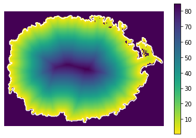
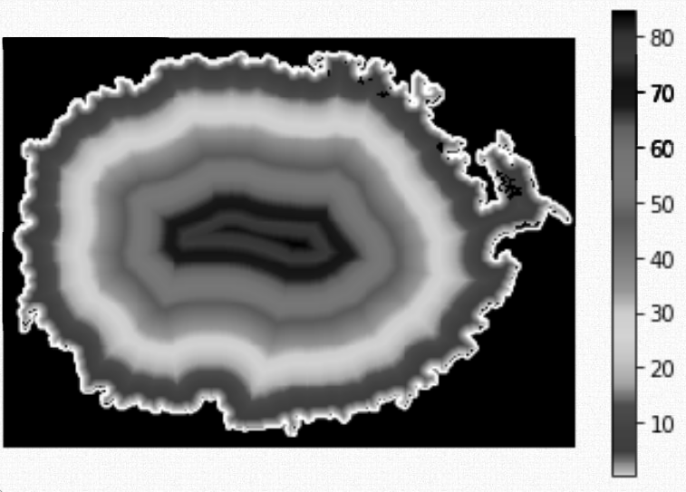
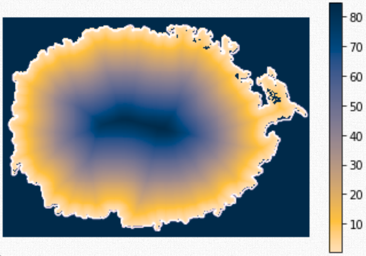

Color
Color depends on context

Picking the right color palette
Colored by distance

Picking the right color palette
Rainbow
Viridis

Grayscale

Picking the right color palette


Picking the right color palette


Color palette foundations
RGB

Color palette foundations

Source: Seaborn palette tutorial.
Different types of color palettes are designed for different purposes

Guessing a numerical sequence from hue

Guessing a numerical sequence from hue

Guessing a numerical sequence from hue